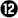
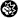

Bourne Legacy(2012)
 
Regie: Tony Gilroy
Cast: Jeremy Renner | Scott Glenn | Stacy Keach |
Edward Norton | Donna Murphy | Michael Chernus | Corey Stoll |
Alice Gainer | Prue Lewarne | Howard Leader | James Joseph O'Neil |
Rachel Weisz | Tony Guida | Sonnie Brown | Neil Brooks Cunningham
Genre: Actie / Avontuur
Lengte: 135 minuten
Jason Bourne heeft de vuile was van de illegale clandestiene programma's Treadstone en Blackbriar buiten gehangen. Om zich in te dekken besluit de top van de samenzwering om de overgebleven agenten permanent uit te schakelen. Onder hen bevindt zich Aaron Cross (Jeremy Renner), afkomstig van het Outcome programma, die samen met een hieraan verbonden wetenschapper (Rachel Weisz) op de vlucht slaat.
Officiële trailer van Bourne Legacy
Officiële trailer van Bourne Legacy